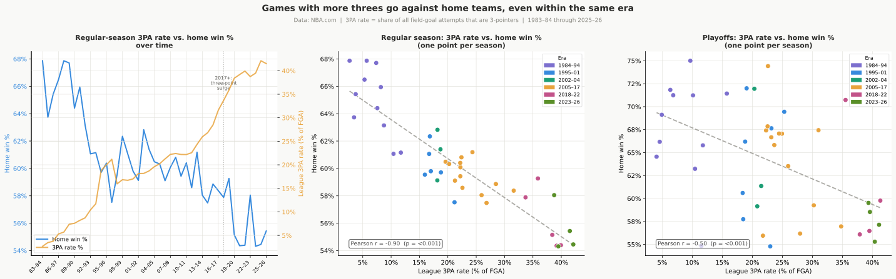
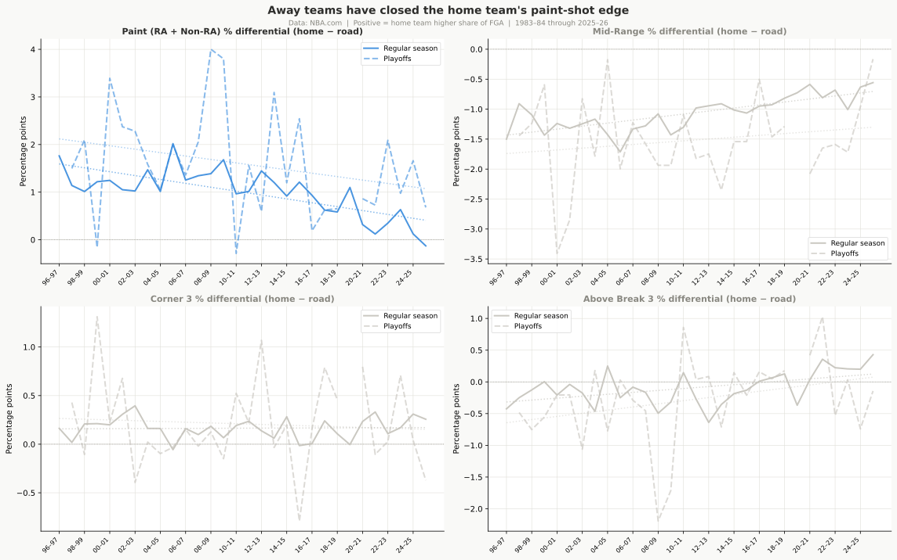
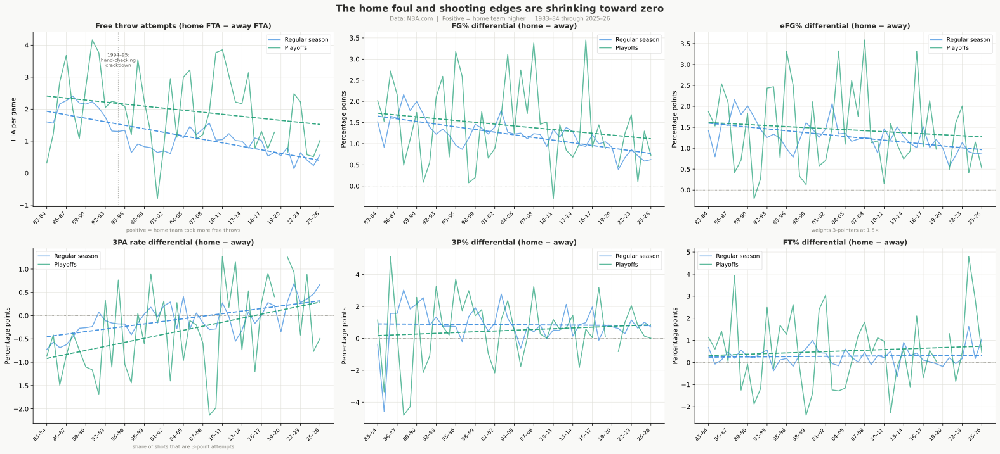
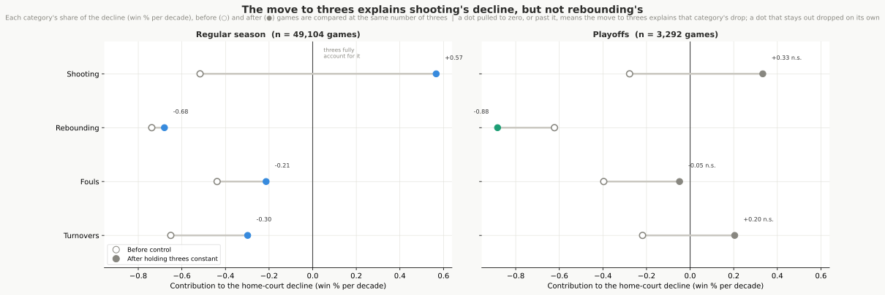

The Three-Point Suspect
Draft
Everyone blames the three-point boom. Put the league’s rising three-point volume next to the falling home win rate and the 40-year chart looks damning: two lines that are near mirror images, one climbing as the other slides. So here is the verdict before the argument. The three-point shift is a real driver of the home-court decline, it reaches close to half of it, and it still isn’t the whole story.
The backdrop, for anyone landing here first: home-court advantage in the NBA has been shrinking for four decades, from about 65% to 55% of regular-season games and from nearly 68% to 58% in the playoffs. This piece asks how much of that fall the three-point revolution can actually account for.
The decline shows up in four box-score categories, the same four that make up home court in the first place: shooting, rebounding, foul calls, and turnover margin. The move to the three-point line runs through three of them.
| Box-score category | Share of the decline | What changed in the real world | Is that cause proven? |
|---|---|---|---|
| Rebounding (largest) | ~30% | Home teams stopped crashing the offensive glass harder than visitors | Proposed. The data shows the pullback happened; it can’t say why |
| Turnovers | ~27% | Half the move to three-point shooting; half better visiting-team preparation | Mixed. The three-point half is proven; the preparation half is a proposal |
| Shooting (eFG%) | ~21% | The move to three-point shooting | Proven |
| Fouls and free throws | ~18% | Half the move to three-point shooting; half fairer, more uniform officiating | Proven (both halves) |
Three-point shooting runs through three of those four rows, which is how it reaches close to half the decline even though its own category, shooting, is only about a fifth. The one row it doesn’t touch is the largest: rebounding, the single biggest driver, and the one the perimeter shift can’t explain. That row gets its own piece: The Mystery on the Glass.
The chart everyone points to is weak evidence
Start with the mirror image itself. The league’s three-point attempt rate and the home win rate have moved in opposite directions for 40 years. When fewer than 7% of shots were threes in the 1980s, home teams won 65%; when 40% are threes today, they win 55%. The timing even lines up with the recent steepening, when the three-point share rose from about a quarter to 40% of all shots in the seasons after 2017.
It is tempting to read that chart as three-point shooting causing the decline, but the same 40 years changed almost everything else about the NBA too: training, scouting, salaries, the size and skill of the players. Anything that drifted steadily up over those decades will trace a near-mirror-image of anything that drifted steadily down, whether or not the two are related at all. So the 40-year chart, on its own, is weak evidence.
One way to check it: set aside the slow drift in both lines and look only at the year-to-year bumps, the seasons where threes rose more or less than their long trend. If threes were really pushing home court down, those bumps should line up too. They partly do, but the link is about 42% weaker than the raw mirror image looked: much of what made the chart so striking was just the two trends sliding past each other in step.
The clean evidence comes from a comparison the 40-year chart can’t make: games played in the same season. Within a single season nothing has had time to drift, so the rules, rosters, and style are the same for every game, and time can’t be the hidden cause. There, the high-three-point games are the ones home teams lose more often, about 2 to 3 fewer home wins per 100 games for every 10-point rise in three-point volume. Because those games are contemporaries, the pattern can’t be two long trends coinciding, and it holds inside every decade and in the playoffs too.

How one shift touches three categories
The perimeter shift reshaped shot selection, not just shooting percentages, and the paint tells that story first. Away teams have closed the gap in paint attempts: in the 1990s home teams generated about 1.3 percentage points more of their attempts from close range than road teams; in the most recent seasons that gap has shrunk to 0.2 points. A paint shot is more efficient than a mid-range jumper, so home teams once started each possession with a small built-in scoring advantage, and as three-point volume rose for everyone that advantage wore away. In games with similar three-point rates the home shooting advantage shows no decline at all, and the paint gap closing traces entirely to rising three-point volume, not to any separate cause. In the playoffs the paint gap narrowed in the late 2010s but has since rebounded toward its old level, making this a regular-season story for now.

That within-season effect lands most directly in one box-score line: shooting. It accounts for roughly one-fifth of the regular-season decline. But the perimeter shift reaches past that one category. It explains about half of the foul decline: three-point attempts draw fewer fouls than drives to the basket, so as both teams moved out, there were fewer foul calls to go around and the home team’s foul advantage shrank with it. It explains about half of the turnover decline for a parallel reason: arc attempts generate fewer live-ball turnovers than drives and post play. Add those in and three-point shooting touches close to half the decline overall.

What it explains, and what it doesn’t
Step back to all four rows at once. A suspicion has been building: that the move to threes is secretly behind everything. Could rebounding and turnovers just be the three-point shift in disguise? No. When games with similar three-point rates are compared directly, the shooting decline disappears entirely: the shooting gap closed because of the perimeter shift, not any separate cause. The rebounding decline barely moves and stays the surest of the four. Fouls and turnovers each land in between: roughly half of each category’s trend is explained by rising three-point volume, leaving the other half separate from the perimeter shift. The categories doing the most work to drag home court down, rebounding and the part of turnovers separate from threes, are doing it for reasons the three-point boom does not explain.
In the playoffs the same comparison is too thin on games to read clearly; only the rebounding decline clears the bar, so this is a regular-season verdict.

An independent check
Sparkle Technologies published its own analysis of the same question, and most of the numbers the two pipelines share match. Where they agree: the overall decline, the foul-call story, and the irrelevance of travel and pace. Sparkle’s home-court figures for the two altitude teams, Denver and Utah, even land within a tenth of a point of mine, a sign both pipelines are measuring the same thing.
Where they differ is instructive, and it is mostly about this suspect. The blog names the three-point revolution as the primary cause, drawing on the same 40-year near-mirror image. I ran a tighter test and found about 42% of that lockstep is just two trends drifting the same way over time, not one causing the other. The three-point effect is real and shows up within individual seasons too; counting its share of the foul and turnover categories, it reaches close to half the decline, still short of the whole story. The category the blog never measures at all, rebounding, is the single largest and is untouched by the perimeter shift, and the fading turnover advantage adds more on top. Part of the gap is just how you count: the three-point shift is the most far-reaching real-world cause, touching three of the four box-score categories, but no single category it drives is as large as rebounding, which has its own separate cause.
Two other places the accounts diverge are worth naming. The blog credited the schedule shift, fewer visitors arriving on a back-to-back, with 15 to 20% of the decline. The premise checks out: back-to-back frequency fell from about 35% to under 20%. The magnitude doesn’t: separating the schedule change from the rest puts its effect at roughly 8% of the decline, with the other 92% the home advantage shrinking within every rest situation alike. And the empty-arena numbers look different only because the blog’s single figure blends games with zero fans and games with partial crowds. Split apart, home teams won 51.0% with empty buildings and 58.5% with any crowd at all, so crowd presence is a switch, not a dial, and there is no real disagreement on the conclusion.
The rebounding decline is the biggest thing the blog leaves out, and it is the largest driver of all. That is the next article.
Next: The Mystery on the Glass
Back to the series hub: The Disappearing Home Court